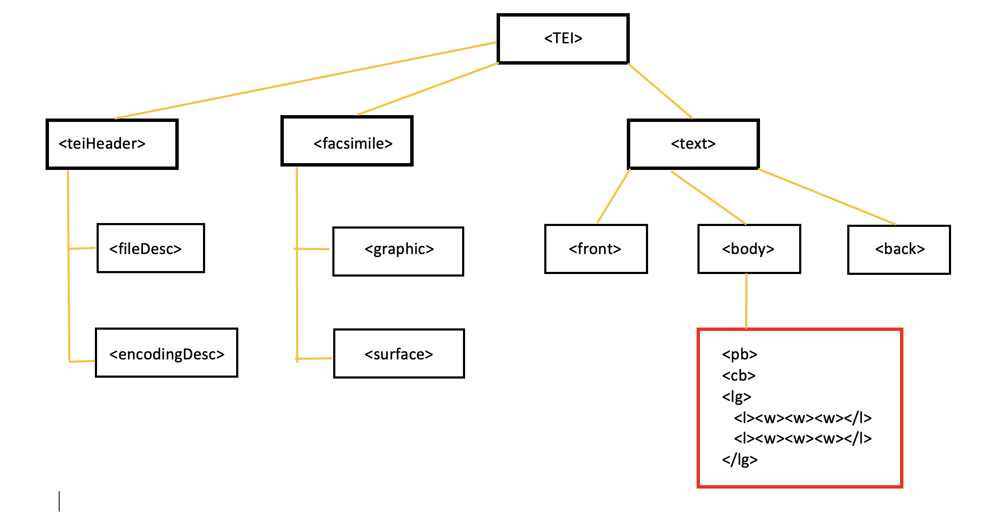

Dieses TEI-Handbuch wurde für alle Projekte der digitalen Editionen von Hartmann von Aue – digital erstellt und ist abhängig von den Richtlinien, die HeiEditions über das Validierungsschema und die dazugehörige Dokumentation festlegt.
Die Beispiele wurden oft im nicht relevanten Teil ein wenig vereinfacht, um auf das jeweils Wichtige zu fokussieren.
Teil I: Struktur der TEI-Dateien
1. XML-Deklaration und TEI-Root-Element
Teil II: Transkription der Handschriften
7. Seite / Spalte / physische Zeile
9. Wort, Spatium, Zusammen- und Getrenntschreibung
11. Sonderzeichen, Diakritika und Superskripte
13. Anweisungszeichen für Initialen
15. Zeichensetzung der Handschrift
18. Hinzufügungen, Streichungen, Substitutionen
19. Hinzufügungen / Streichungen und Tokenisierung
20. Zeilensprünge im Versinneren und im Wortinneren
22. Nicht ausgeführte Wörter / Zeilen
23. Verswiederholungen oder sehr ähnliche Verse
24. Lücken und beschädigter Text
26. Abschnittszusammenfassungen
28. Lagensignaturen und Reklamanten
Teil III: Editorische Bearbeitung
32. Editorische Eingriffe und Korrekturen
33. Editorische Behandlung der Spatien
34. Editorische Behandlung der Zeichensetzung
1) Die Deklarationen für XML und Schema sind für alle Dateien folgende:
<?xml version="1.0" encoding="UTF-8"?>
<?xml-model href="https://digi.ub.uni-heidelberg.de/schema/tei/heiEDITIONS/tei_hes.rng" type="application/xml" schematypens="http://relaxng.org/ns/structure/1.0"?>
<?xml-model href="https://digi.ub.uni-heidelberg.de/schema/tei/heiEDITIONS/tei_hes.rng" type="application/xml" schematypens="http://purl.oclc.org/dsdl/schematron"?>
2) Für die Erkennung der Entities braucht es folgende Deklaration (Absätze beachten):
<!DOCTYPE TEI
[
<!ENTITY % heiEDITIONS_entities SYSTEM "https://digi.ub.uni-heidelberg.de/schema/tei/ heiEDITIONS/declarations/heieditions-entities.txt">
%heiEDITIONS_entities; ]>
3) Das Root-Element <TEI> enthält folgende Attribute und Werte:
<TEI xmlns="http://www.tei-c.org/ns/1.0" xmlns:hei="https://digi.ub.uni-heidelberg.de/schema/tei/heiEDITIONS" ana="hc:IWDDocument">
4) Die Struktur der Datei sieht dann wie folgt aus:
Das Element <teiHeader> wird zunächst nur mit zwei Kindelementen gefüllt: <fileDesc> und <encodingDesc>.
1) Die Datei-Beschreibung <fileDesc> enthält ein <titleStmt>, ein <publicationStmt> und eine <sourceDesc>.
Das <titleStmt> enthält das Element <title> mit dem Inhalt: "Iwein-Hs. X"; das Element <author> mit dem Inhalt "Hartmann von Aue"; und das Element <respStmt> mit den Kindelementen <resp> (Inhalt: "transcription" "revision" "edition") und <persName> (Inhalt: "Name der verantwortlichen Person").
Das <publicationStmt> enthält lediglich das Kindelement <publisher> mit dem Inhalt "UB Heidelberg".
Die <sourceDesc> enthält das Element <listWit> mit dem Kindelement <witness>; dieses Element erhält als Attribut eine @xml:id mit dem Wert der Sigle der Handschrift. <witness> hat als Kindelement <msDesc> und dieses wiederum als Kindelement <msIdentifier>. Kindelemente des letzteren sind <settlement> (Inhalt: Bibliotheksort), <repository> (Inhalt: Bibliotheksname) und <idno> (Inhalt: Signatur der Handschrift).
2) Die Codierungs-Beschreibungen müssen folgende sein:
<encodingDesc><listPrefixDef>
<prefixDef ident="hc" matchPattern="(.+)" replacementPattern="https://lod.ub.uni-heidelberg.de/ontologies/heieditions/hc/current/$1"/>
<prefixDef ident="character" matchPattern="(.+)" replacementPattern="https://digi.ub.uni-heidelberg.de/schema/tei/heiEDITIONS/declarations/chars.xml#$1"/>
</listPrefixDef></encodingDesc>
Zwischen dem TEI-Header und dem Text steht das Element <facsimile>. Es wird mit der Information zu Seiten (<surface>), Abbildungen (<graphic>) und Bildbereichen (<zone>) gefüllt.
1) Jede Seite der Handschrift wird als <surface> erfasst. Das Element hat die Attribute @ana (mit dem Wert "hc:Page"), @xml:id (dessen Wert die Sigle der Handschrift und die Seitenzahl ist, z.B. "b_12v") und @n (mit dem Wert der Seitenzahl, z.B. "12v").
2) Als erstes Kindelement der <surface> steht das Element <graphic/> mit dem Attribut @url und als Attributwert die url der digitalen Abbildung dieser Seite. Das Element ist leer.
3) Als weitere Kindelemente von <surface> folgen nun so viele Elemente <zone> wie die Seite Bildbereiche hat. Bildbereiche der Seite sind Spalten und evtl. existierende Randbereiche. Eine einspaltig beschriebene Seite hat also ein einziges Element <zone>, eine zweispaltig beschriebene Seite mit einer Lagenzählung im unteren Rand hat drei <zone>-Elemente.
a) <zone>-Elemente für Spalten haben die Attribute @ana (mit dem Wert "hc:Column"), @xml:id (dessen Wert ist "Sigle der Handschrift"_"Seitenzahl"-"Spalte", z.B. "b_12v-a") und @n (mit dem Wert des Spaltenbuchstabens, z.B. "a").
b) <zone>-Elemente für Randbereiche haben die Attribute @ana (mit dem Wert "hc:MarginalZone"), @xml:id (dessen Wert ist "Sigle der Handschrift"_"Seitenzahl"-"ein Buchstabe mehr als die letzte Spalte", z.B. "b_12v-b") und @hei:placeRef (in der Regel mit dem Wert "hc:PageBottom", ggf. ergänzt durch "hc:PageMarginRight"). Das Element <zone/> ist leer.
Beispiel:
<surface
ana=
"hc:Page"
xml:id=
"b_12v"
n=
"12v"
>
<graphic
url=
"https://digi.ub.uni-heidelberg.de/diglit/cpg391/0028/image"
/>
<zone
ana=
"hc:Column"
xml:id=
"b_12v-a"
n=
"a"
/>
<zone
ana=
"hc:MarginalZone"
xml:id=
"b_12v-b"
hei:placeRef=
"hc:PageBottom hc:PageMarginRight"
/>
</surface>
Zu Randbereichen wie Lagensignaturen und Reklamanten → Kap. 28; zu xml:id → Kap. 17.
Auf das Element <facsimile> folgt nun der Text. Das Element <text> enthält das Attribut @ana, dessen Wert aus zwei Bestandteilen besteht: zum einen "hc:CourtlyRomance" und zum anderen, je nach Fall, "hc:CompleteExpression" oder "hc:ExpressionFragmentThroughLoss".
Das Element <text> enthält immer das Element <body>. Es kann auch die Elemente <front> und/oder <back> enthalten. In <front> werden die Titel notiert, die manche Schreiber dem Werk voranstellen und die nicht zu Hartmanns Text gehören. Falls so ein Titel in der Handschrift existiert, wird ein <front>–Element angelegt. Als erste Kindelemente stehen <pb> und <cb> (→ Kap. 7). An dritter Stelle wird ein Element <docTitle> angelegt mit einem Kindelement <titlePart>. In diesem wird nun der Titel eingetragen, tokenisiert (→ Kap. 9.1) und mit Angabe der <lb/> (→ Kap. 7.3).
Beispiel:
<front>
<pb n="5v"/><cb
n="c"/>
<docTitle><titlePart>
<lb
n="49"/><hi
hei:color="Red"><w>Von</w><w>künig></w><w>Artus</w><w>hochzeit</w>
</titlePart></docTitle>
</front>
In <back> hingegen werden typischerweise Schreiberkolophone eingetragen. Das Element <back> enthält ein Kindelement <trailer> mit dem Attribut @ana und dem Wert "hc:Colophon".
Beispiel:
<back>
<trailer ana="hc:Colophon">
<w>Amen</w>
</trailer>
</back>
Manchmal enthalten Kolophone Verzierungen, die wir als <metamark> (→ Kap. 16) mit dem Attribut @ana und dem Wert "hc:DecorativeMarker" taggen.
Das Element <body> enthält nur das Kindelement <div>, in welchem der Text des Werks steht. Der Text wird strukturiert in Verspaare und Verse erfasst.
Wir verwenden vorgefertigte Templates, die die Eingabe des Textes erleichtern, weil wir in ihnen die durchnummerierte Versstruktur bereits aufgestellt und mit den Elementen für Wörter und Wortzwischenräume gefüllt haben.
Es gibt prinzipiell drei Arten von Elementen im Text: strukturelle, semantische und Alternativkonstruktionen.
a) Strukturelle Elemente (<pb/>, <cb/>, <lb/>,<gap/>) sind deskriptiv und objektiv, sie beschreiben Eigenschaften der Handschrift und funktionieren wie Punkte, daher sind sie immer leer (→ Kap. 7, → Kap. 24)
b) Semantische Elemente (<l>, <w>, <hi>, <pc>) gründen auf unseren Definitionen gründen: wir entscheiden, ob etwas ein Wort, ein Vers oder ein Satzzeichen ist. Sie enthalten immer Text.
c) Alternativkonstruktionen (<choice>, <subst>) enthalten immer zwei mögliche Darstellungsoptionen, müssen also jeweils zwei Kindelemente enthalten (→ Kap. 31, → Kap. 18). Z.B.: <choice> <orig> <reg> </choice> erlaubt es, entweder das zu visualisieren, was in <orig> steht, oder das, was in <reg> steht.
1) Der Beginn einer neuen Seite wird getaggt mit <pb/>, auch der Beginn der ersten Seite (evtl. bereits in <front>, → Kap. 5). Dieses Element ist immer leer. Es steht – wie alle Elemente – immer möglichst weit 'oben' in der xml-Struktur: Bei Handschriften mit abgesetzten Versen also hinter dem Schluss der letzten <lg> der vorangehenden Seite, oder, wenn von einem Verspaar ein Vers auf jeder Seite steht, hinter dem Schluss der letzten <l>. Bei Handschriften ohne abgesetzte Verse allerdings steht das Element an der ensprechenden Stelle. Diesem Element folgt immer das Element <cb/>. Es enthält immer das Attribut @n; der Wert des Attributs ist die Blatt- und Seitenzahl, z.B.: <pbn="1v"/>, oder <pbn="2r"/>
2) Der Beginn einer neuen Spalte wird getaggt mit <cb/>. Dieses Element ist immer leer. In einspaltigen Handschriften steht es immer hinter dem Element <pb/>. Bei mehrspaltigen Handschriften steht es außerdem hinter dem letzten Vers oder Verspaar der vorangehenden Spalte und vor der ersten Zeile der neuen Spalte. Es enthält immer das Attribut @n; der Wert des Attributs ist der Buchstabe für die jeweilige Spalte (a, b, c), z.B.: <cb n="a"/>, oder <cb n="b"/>
3) Der Beginn einer neuen physischen Zeile wird getaggt mit <lb/>. Dieses Element ist immer leer. Es enthält immer das Attribut @n; der Wert des Attributs ist die Nummer der physischen Zeile in der aktuellen Spalte, z.B. <l><lb n="23"/><w><w><w>
Die Position von <lb> in Bezug zu <l> ist im Grunde irrelevant, es kann auch mitten im <w> stehen. Aus praktischen Gründen setzen wir überall dort, wo der Versbeginn mit dem Zeilenbeginn zusammenfällt, <lb> als erstes Kindelement von <l> (s. das Beispiel oben).
Zu Worttrennung → Kap. 9.3; zu Zeilenüberhängen → Kap. 21.
1) Jedes Verspaar steht innerhalb des Elements <lg>. Es führt das Attribut @ana mit den Werten "hc:Couplet" (=Reimpaar, das häufigste), "hc:Tercet" oder "hc:Quatrain".
2) Jeder Vers steht innerhalb des Elements <l>. Dieses Element führt erstens das Attribut @n; der Wert des Attributs ist die Versnummer nach Lachmann oder den Standard-Editionen. Zweitens eine @xml:id (→ Kap. 17). Und drittens eine alternative Nummerierung strikt nach der Handschrift.
Bei Versumstellungen durch den Schreiber folgt die Transkription zunächst der physischen Versanordnung der Handschrift. Das bedeutet, dass die Nummern der <lb>-Elemente stets konsekutiv bleiben; die Nummern der <l>-Elemente hingegen werden angepasst (zur editorischen Behandlung → Kap. 35). Zum Beispiel:
<l
n=
"113"
xml:id=
"l_113"
><lb
n=
"24"
/>
<l
n=
"112"
xml:id=
"l_112"
><lb
n=
"25"
/>
Fehlt ein Vers oder eine Gruppe von Versen, stehen sie schlicht nicht in der Transkription:
<l
n=
"101"
xml:id=
"l_101
><lb
n=
"24"
/>
<l
n=
"112"
xml:id=
"l_112
><lb
n=
"25"
/>
Bei hinzugefügten Versen werden die notwendigen <l> und <lg>-Elemente hinzugefügt. Die Nummerierung der <l>-Elemente im @n-Attribut ist die des letzten mit Lachmann übereinstimmenden Verses, gefolgt von einem Komma und einer zweiten konsekutiven Zahl (bzw., je nach Projekt, ein Buchstabe), z.B.:
<l
n=
"117"
>
<l
n=
"117,1"
>
<l
n=
"117,2"
>
Für versehentlich falsch geordnete Verse, die der Schreiber mit Umstellungszeichen wieder in die richtige Reihenfolge bringt → Kap. 27.
3) Wir verwenden die Standard-Versnummerierung der Forschung. Später wird automatisch eine alternative, Handschrifteneigene konsekutive Nummerierung eingefügt, die evtl. auch in der Edition dargestellt werden kann.
4) In der Excel-Datei "Konkordanz" werden fehlende Verse gelöscht, zusätzliche Verse ergänzt, umgestellte Vers an die entsprechende Position gestellt und farbig markiert, damit eine "Karte" der Verse entstehen kann, die es später erlaubt, parallele Verse auch parallel zu visualisieren.
1) Jedes linguistische Wort wird getaggt mit dem Element <w>. Dies nennt man auch ein token. Jedes Wort führt eine @xml:id (→ Kap. 17) mit der Struktur "Element_Versnummer_laufende Nummer", z.B.: @xml:id="w_765_1" (=erstes Element <w> im Vers 765).
2) Da wir Worte im Element <w> nach linguistischen Kriterien erfassen, kann die Zusammen- oder Getrenntschreibung der Handschrift wiedergegeben werden. Spatien haben nicht mehr unbedingt die Funktion der Worttrennung.
3) Zwischen zwei Worten steht in der Regel ein Spatium. Spatien werde getaggt mit dem Element <c> </c>, dessen Inhalt ein Spatium ist. Werden zwei Worte in der Hs. zusammen geschrieben, bleibt das Spatium in der Transkription weg, kann in der Edition aber ergänzt werden (→ Kap. 35). Bei der Tilgung und Ergänzung ganzer Worte in der Handschrift muss im Code jeweils ein Spatium getilgt bzw. ergänzt werden, damit bei der Darstellung die Worte nicht zusammen geschrieben erscheinen. Z.B.:
<w>Swer</w><w>an</w><add><w>rehte</w><c> </c></add><w>güete</w>
4) Bei Worttrennung am Zeilenende wird an der entsprechenden Stelle innerhalb des Wortes das <lb> mit der Nummer der neuen Zeile eingefügt, sowie mit dem Attribut @break="no". Gibt es ein Trennungszeichen, wird dieses als <metamark> (→ Kap. 16) erfasst, mit dem Attribut @ana="hc:Hyphen", darin das Trennungszeichen. Z.B.:
<lb n="26"/>
<w/><w/><w/><w>vrüme<metamark
ana="hc:Hyphen">⸗</metamark><lb
n="27"
break="no"/>keit</w>
5) Zusammen- und Getrenntschreibung ist in Handschriften bei weitem nicht immer eindeutig. Im Zweifelsfall werden die Worte so erfasst, wie es die Wörterbücher vorsehen: stehen zwei verschiedene Worte nahe beieinander, sind aber nicht eindeutig zusammengeschrieben, transkribieren wir sie als getrennt; sind innerhalb eines Wortes zwei Buchstaben ein klein wenig voneinander entfernt, ohne dass es sich aber um eine eindeutige Getrenntschreibung handelt, wird das Wort zusammengeschrieben. Dies zu entscheiden, liegt im Ermessen des Transkribenden.
6) Bei deutlicher Getrenntschreibung innerhalb eines grammatischen Wortes (z.B. bei Verbpräfixen) wird das Wort als solches in einem einzigen <w>-Element erfasst und die Trennung mit einem Spatium markiert, das jedoch für die Editionsansicht gelöscht wird:
<w>ge<choice><orig><c> </c></orig><reg/></choice>lesen</w>
Umgekehrt gilt: Bei eindeutiger Zusammenschreibung zweier Worte werden beide als getrennte Tokens erfasst. Ihre Zusammenschreibung in der Handschrift wird dadurch gekennzeichnet, dass kein Spatium <c> </c> zwischen den beiden Tokens steht. Will man in der Edition die beiden Worte getrennt erscheinen lassen, kann man das Spatium editorisch hinzufügen:
<w>ze<choice><orig/><reg><c> </c></reg></choice>lesen</w>
7) Besondere Regeln für die Tokenisierung:
Wir definieren nach linguistischen Kriterien, was ein Wort ist. Im Zweifelsfall richten wir uns nach den Wörterbüchern.
Pronominaladverbien und trennbare Verbpräfixe werden immer getrennt. Beispiele:
daran → <w>dar</w><w>an</w>
warumbe → <w>war</w><w>umbe</w>
abebrechen → <w>abe</w><w>brechen</w>
Bei Kontraktionen (Proklise, Enklise und Krasis) werden die Worte ebenfalls getrennt:
Gehört der Vokal im Bereich der Krasis eindeutig (auch) zu dem zweiten Wort, so wird vor ihm getrennt; gehört er nur zu dem ersten Wort, wird nach ihm getrennt. Beispiele:
sageter → <w>saget</w><w>er</w> (< sagete er)
zen → <w>z</w><w>en</w> (< ze den)
zun → <w>zu</w><w>n</w> (< zuo den)
Gehört ein Konsonant im Bereich der Krasis eindeutig (auch) zu dem ersten Wort, so wird nach ihm getrennt; gehört er nur zur zweiten Form, so wird vor ihm getrennt. Beispiele:
mirz → <w>mir</w><w>z</w>(< mir ez)
alsi → <w>als</w><w>i</w> (< alse si).
Dreifache Kontraktion:
destwar → <w>de</w><w>st</w><w>war</w> (ebenso auch für deiswar oder deswar)
Bei Kontraktion mit dem Pronomen der 2. Pers. Sing du stellen wir das t oder d an der Grenze immer zum Personalpronomen.
mahtu → <w>mah</w><w>tu</w>
mustu → <w>muos</w><w>tu</w>
soltu → <w>sol</w><w>tu</w>
bistu → <w>bis</w><w>tu</w>
magstu → <w>mags</w><w>tu</w>
sagestu → <w>sages</w><w>tu</w>
wellestu → <w>welles</w><w>tu</w>
1) Obwohl alle Zeichen so exakt wir möglich transkribiert werden sollen, ist eine Transkription nicht die exakte Reproduktion der Handschrift. Wir übertragen mit der Hand geschriebene Texte in eine mechanische Schrift. Das bedeutet, dass ein variables und polymorphes zu einem einförmigen Zeichensystem vereinfacht und vereinheitlicht wird. Wir reproduzieren also nicht die verschiedenen Allographen der Handschriften (unterschiedliche Formen von z, d, r, s usw.), sondern schreiben immer nur die entsprechenden Grapheme neuzeitlicher Druckschrift. Einzige Ausnahme ist das Schaft-s "ſ", weil dies oft schon von mittelalterlichen Schreiben mit "f" verwechselt wurde. Es kann bei der Textprozessierung leicht zu "s" normalisiert werden.
2) Majuskeln von Minuskeln zu unterscheiden, ist vor allem in späteren Handschriften nicht leicht. Eine Majuskel sollte einen anderen Schriftzug haben als die entsprechende Minuskel (wie heute in aA bB dD eE fF gG). Aber auch so ist es manchmal schwierig, weil Grapheme, die wir als Majuskeln transkribieren würden, plötzlich im Wortinneren erscheinen. Da wir die mittelalterlichen Grapheme nicht reproduzieren, transkribieren wir sinnweise: nur klare Majuskeln am Wortanfang werden als solche erfasst; alles andere sind Minuskeln. Ausgenommen sind alle litterae notabiliores, also Initialen, rubrizierte Versanfänge und sonstige hervorgehobene Anfangsbuchstaben, die wir immer als Majuskeln transkribieren.
Diakritika und Superskripte werden mit Entities erfasst. Entities sind Platzhalter für bestimmte Zeichen, die es erlauben, diese schnell wiederzufinden oder zu normalisieren. Auch können sie variabel dargestellt werden. Hier kann die Liste der Sonderzeichen eingesehen werden. Entities kommen auch als Abkürzungszeichen zum Einsatz (→ Kap. 25). Bei Sonderzeichen, die als Metamarks (→ Kap. 16) gelten, gibt es ebenfalls eine Liste.
Die Entities lassen sich, wenn man sie nicht auswendig kann, sowohl im Text- wie im Author-Modus von Oxygen leicht über die Sidebar "Entities" eingeben: Menü → Window → Schow View → Entities.
1) Initialen werden getaggt mit dem Element <hei:initial>. Sie führen drei Attribute:
a) @rendition, das den Initialentypus bezeichnet; dessen häufigster Wert ist "hc:Lombard", doch das Schema sieht unter anderem auch vor: "hc:FlourishInitial" (Fleuronné-Initiale), "hc:SilhouetteInitial" (Silhouetten-Initiale), "hc:ScrollworkInitial" (Rankeninitiale), "hc:SpaltleistenInitial" (Spaltleisteninitiale), "hc:FigureInitial" (Figureninitiale), "hc:AnthropomorphicInitial" (anthropomorphe Initiale), "hc:ZoomorphicInitial" (Tierinitiale), "hc:HistoriatedInitial" (historisierte Initiale);
b) @hei:color, das die Farbe bestimmt, z.B. "Red", "Blue", "Gold"; und
c) @hei:heightLines, das die Höhe der Initiale in Zeilen angibt, dessen Wert also eine volle Zahl ist.
2) Vorgezeichnete, aber nicht ausgeführte Initialen, die in Form, Format und Platzierung aber bereits die Initiale zeigen, werden wie normale Initialen erfasst, erhalten aber zusätzlich in @rendition den Wert: "hc:Sketch". Dieser ist kompatibel mit den anderen Attributwerten, z.B. "hc: Sketch hc:Lombard".
3) Nicht ausgeführte Initialen, für die Raum freigelassen wurde oder die am Spaltenrand zu stehen hatten, werden mit einer besonderen <choice>-Konstruktion erfasst: in deren Kindelement <orig> steht ein leeres Element <space/> für den Freiraum (optional kann dieses <space> auch ein Element <desc> für die freie Beschreibung eines Phänomens enthalten); anstatt eines <reg> steht hier das Element <supplied>, mit dem Kindelement <hei:initial> (→ Kap. 12), ohne Attribute.
Beispiel:
<hei:cue
ana="hc:CueInitial"
hei:placeRef="hc:Inspace">s</hei:cue>
<w>
<choice>
<orig>
<space
rendition="hc:BlankAreaLeftForInitial"
unit="character"
quantity="1"
hei:indents="4">
<desc
xml:lang="de">Aussparung für Initiale</desc>
</space>
</orig>
<supplied><hei:initial>S</hei:initial></supplied>
</choice>wer
</w>
4) Manche Hs. setzen anstatt Initialen oder in Abwechslung mit ihnen ein Paragraphenzeichen oder Pilcrow. Sie werden getaggt als <label> mit dem Attribut ana="hc:SectionMarker" und dem Attribut hei:PlaceRef. Das Paragraphenzeichen muss im Element <c> stehen:
<label ana="hc:SectionMarker" hei:PlaceRef="hc:PageMarginLeft"><c>¶</c></label>
Die Anweisungen für Initialen sind keine Metamarks, weil sie ja Buchstaben sind. Für sie wurde das Elemene <hei:cue> geschaffen. Wir setzen das Element immer unmittelbar vor das Wort, das die Initiale enthält, auf die das Zeichen verweist. Wir versehen es mit einem Attribut @ana="hc:CueInitial" und einem Attribut @hei:PlaceRef, dessen Wert meist "hc:InSpace" oder "hc:PageMarginLeft" bzw. "hc:PageMarginRight" sein wird, der aber auch ein anderer sein kann (→ Kap. 18).
Der Buchstabe steht in einem Kindelement <c>.
<hei:cue ana="hc:CueInitial" hei:placeRef="hc:InSpace"><c>d</c></hei:cue>
1) Hervorhebung durch farbige Schrift wird getaggt mit dem Element <hi> mit dem Attribut @hei:color und den Werten "Red", "Green", "Blue" etc. Ist ein ganzes Wort farbig geschrieben, steht das Element <hi> außerhalb des <w>-Elements, ebenso bei mehreren Wörtern.
2) Hervorhebung der Versanfänge durch rote Striche (typisch für Papierhandschriften) wird ebenfalls getaggt mit <hi>; diesmal kommt das Attribut @rendition ins Spiel, mit dem Wert "hc:RedStroke", in manchen Fällen auch "hc:RedRetrace". Hervorgehobene Buchstaben am Versanfang werden als Majuskeln transkribiert.
3) Hervorhebung der Versanfänge durch Herausrücken der Anfangsbuchstaben in die Versalienspalte wird ebenfalls getaggt mit <hi> und dem Attribut @rendition, doch in diesen Fällen lautet der Attributwert "hc:Versal".
4)Auf spätere Unterstreichungen oder sonstige Hervorhebungen von moderneren Händen verweisen wir in <note> (→ Kap. 30).
5) Kadellen (oder Cadellen) sind in normaler Tinte ausgeschmückte Buchstaben, die aber keine Initialen sind; sie leiten keine Abschnitte ein, sie stehen auch nicht an herausragender Stelle. Sie erscheinen meist in der obersten Zeile einer Spalte und müssen daher auch nicht immer der erste Buchstabe im Vers sein. Wir taggen sie mit dem Element <hi>, dem Attribut @rendition und dem Wert "hc:Cadel".
1) Als Satzzeichen taggen wir (mit <pc>) Zeichen, die in irgendeiner Form eine sprachliche oder syntaktische Bedeutung haben. Das sind in der Regeln Virgeln "/" oder vor allem Reimpunkte "·" (Punkt auf Mitte). Wir setzen das Satzzeichen vor das Spatium zwischen zwei Worten:
<w/>
<pc>·</pc>
<c> </c>
<w/>
Am Ende eines Verses, wenn der folgende Vers mit einer neuen <lb> beginnt, ist kein Spatium hinter dem <pc> nötig.
2) Satzzeichen werden individuell erfasst, so dass zwei evtl. aufeinander folgende Zeichen in zwei unterschiedlichen Tags <pc> stehen. <pc>.</pc><pc>‹</pc>
Zur editorischen Behandlung von Satzzeichen → Kap. 34.
1) Metazeichen sind weder Buchstaben noch Ziffern noch Satzzeichen (obwohl manchmal auch Buchstaben die Funktion von Metazeichen einnehmen, z.B. bei Umstellungszeichen). Das können Worttrennungszeichen, Korrekturzeichen, Einweisungszeichen oder Ähnliches sein. Sie werden getaggt als <metamark> und führen das Attribut @ana, dessen Wert, je nach Funktion des Zeichens, eine der folgenden Optionen sein wird: "hc:Hyphen"(Trennstrich, → Kap. 9.3), "hc:RunOverMark" (Zeilenanschlusszeichen), "hc:WordDivider" (Worttrenner), "hc:CorrectionMark" (Korrekturzeichen), "hc:InsertionMark" (Einweisungszeichen), "hc:TranspositionMark" (Umstellungszeichen), "hc:ReferenceMark" (Verweiszeichen), "hc:WordMark" (Wort-Zeichen), "hc:NumberMark" (Nummer-Zeichen), "hc:DecorativeMark" (Ziermarker), "hc:LineDelimiter" (Zeilenabgrenzungszeichen), "hc:CueNumeral" (Anweisung für Nummer).
Ein Word-Mark ist ein Zeichen, das manchmal bei Worten zum Einsatz kommt, die nur aus einem Vokal bestehen (z.B. ê), um anzuzeigen, dass dies kein falscher Wortansatz ist, sondern ein volles Wort; z.B. |ê| oder ê'. Number-Mark sind in der Regel gehobene Punkte, die in mittelalterliche Schrift Ziffern als Nummern markieren, z.B. ·xxii·.
2) Metamarks können außerdem das Attribut @hei:PlaceRef führen.
3) Die Liste und die Anwendungen der Metazeichen findet sich hier.
4) Im Unterschied zu Trennungszeichen oder anderen Marken, die im Schreibprozess entstanden, stehen Einweisungszeichen zusätzlich im Element <add> (→ Kap. 18), wobei in diesen Fällen das Attribut @hei:PlaceRef am <add> steht. Ein Wort wie 'Hu,nd', mit Einweisungszeichen und über der Zeile nachgetragenem 'n' würde also wie folgt kodiert:
<w>Hu<add hei:PlaceRef="hc:Below"><metamark ana="hc:InsertionMark">,</metamark></add><add hei:PlaceRef="hc:Above"n</add>d</w>
Elemente, die markiert werden sollen, um an anderer Stelle auf sie zu verweisen, werden mit einer @xml:id versehen. Der Wert des Attributs muss eine in der Datei einzigartige Zeichenkette sein, xml:ids dürfen sich also nicht wiederholen. Zur Einheitlichkeit wählen wir folgenden Aufbau von @xml:ids: "Element_Versnummer_laufendeNummer". So wäre z.B. eine @xml:id="w_765_1" sofort erkennbar als Element 'Wort', Vers 765, erstes Wort des Verses. Prinzipiell tragen alle Wörter (<w>) und Verse (<l>) xml:ids.
IDs, die sich nicht auf Bereiche des Textes beziehen, haben allerdings eine andere Struktur, → Kap. 3.
Auf @xml:ids wird verwiesen mit dem Attribut @target, dessen Wert die xml:id des Elements ist, auf das verwiesen wird, mit einer Raute davor, z.B.: @target="#w_765_1".
1) Das Element <del> taggt eine Streichung. Die Art der Streichung wird durch das Attribut @rendition angegeben, dessen Wert je nach Fall sein kann: "hc:Erased" (radiert), "hc:Strikethrough" (durchgestrichen), "hc:RedStrikethrough" (rot durchgestrichen), "hc:Overwritten" (überschrieben), "hc:Overpainted" (übermalt), "hc:Underlined" (unterstrichen), "hc:Underdotted" (unterpungiert), "hc:Overdotted" (überpungiert), "hc:Adapted" (angepasst). Die Attributwerte sind kombinierbar.
2) Hinzufügungen werden getaggt als <add>. Das Attribut @hei:placeRef gibt an, wo diese Hinzufügung steht: "hc:AboveLine", "hc:BelowLine", "hc:Inline", "hc:PageMarginLeft", "hc:PageMarginRight", "hc:ColumnMarginLeft", "hc:ColumnMarginRight". Es gibt weitere Werte (→ KurzDoku 5.14).
3) Eine Substitution liegt dann vor, wenn ein Schreiber etwas Geschriebenes streicht und durch etwas Anderes ersetzt. Ein Element <subst> enthält zwangsmäßig und ausschließlich die Elemente <del> und <add>. Die Attribute für <del> und <add> sind die oben angegebenen. Es gibt einen besonderen Fall: wenn ein Buchstabe nicht gestrichen sondern durch Überschreibung angepasst wurde, führen beide Elemente das Attribut @rendition mit dem Wert "hc:Adapted".
Beispiele:
Buchstabe im Wort hinzugefügt: <w>so<add hei:placeRef="hc:AboveLine">l</add></w> (→ Kap. 19.1)
Buchstabe im Wort gestrichen: <w>leit<del rendition="hc:Underlined">e</del></w>
Buchstabe im Wort ersetzt: <w>w<subst><del rendition="hc:Underdotted hc:Overdotted">o</del> <add hei:placeRef="hc:AboveLine">a</add></subst>rt</w>
Buchstabe im Wort ersetzt: <w>w<subst><del rendition="hc:Adapted">o</del><add rendition="hc:Adapted">a</add></subst>rt</w>
Wort gestrichen: <del rendition="hc:Strikethrough"><w>überflüssig</w></del>
Wort hinzugefügt: <add hei:placeRef="hc:ColumnMarginRight"><w>neu</w></add>
Wort(e) ersetzt: <subst><del rendition="hc:Erased"><w>falsche</w><w>Wörter</w></del><add hei:placeRef="hc:Superimposed"><w>richtige</w><w>Worte</w></add></subst>
4) Tags, die ganze Wörter betreffen, sollten nach Möglichkeit außerhalb des <w>-Tags stehen, wie die Beispiele zeigen.
5) Bei ganzen Wörtern gehört auch ein Spatium <c> </c> in <del> oder <add>, damit die Darstellung korrekt bleibt:
<subst>
<del
rendition="hc:Erased"><w>falsche</w><c> </c><w>Wörter</w><c> </c></del>
<add
hei:placeRef="hc:AboveLine"><w>richtige</w><c> </c><w>Worte</w><c> </c></add>
</subst>
6) Hinzufügungen und Streichungen ganzer Verse werden nicht mit <del> oder <add> getaggt, sondern mit <delSpan> und <addSpan>; wie alle ‚span‘-Elemente sind sie leer, ein <anchor>-Element markiert das Ende des Gestrichenen:
<addSpan
hei:placeRef="hc:ColumnMarginLeft"
spanTo="#addSpan_7657_1"/>
<l
n="7657">
<w/><w/><w/><w/>
</l>
<anchor
xml:id="addSpan_7657_1"/>
7) Gibt es keine Anzeichen dafür, dass der Schreiber sich einer Wiederholung bewusst war, dann ist die Entscheidung, dass ein Stück Text wiederholt (und damit überflüssig) ist, eine editorische. In diesen Fällen taggen wir die zweite Sequenz der Wiederholung als <surplus> (→ Kap. 32); <subst> und <add> fallen weg:
<w>wiederholte</w><w>Worte</w><surplus><w>Worte</w></surplus>
1) Manchmal führt die Korrektur des Autors zu einem neuen Wort. Z.B. sol:
<w>so<add hei:placeRef="hc:AboveLine">l</add></w>
Meist wollen wir in solchen Fällen nur das Ergebnis tokenisieren. In besonderen Fällen aber, z.B. weil die Verschreibung interessant und vielsagend ist oder weil die Korrektur offensichtlich erst bei einer Überarbeitung stattgefunden hat, ließen sich auch zwei Tokens innerhalb einer <choice>-Konstruktion setzen; das zweite bleibt leer und verweist auf das erste:
Beispiel 1: so → sol
<choice>
<w xml:id="w_123_1">so
<add hei:placeRef="hc:AboveLine"
corresp="#w_123_2">l</add>
</w>
<w
xml:id="w_123_2"
copyOf="# w_123_1"></w>
</choice>
Beispiel 2: hundes → bundes
<choice>
<w
xml:id="w_1234_1">
<choice>
<del
rendition="hc:Strikethrough"
corresp="#w_1234_1">h</del>
<add
hei:placeRef="hc:AboveLine"
corresp="#w_1234_2">b</add>
</choice>undes
</w>
<w
xml:id="w_1234_2" copyOf="# w_1234_1"></w>
</choice>
2) Wo man kein <subst> einsetzen kann, weil das <del> und <add> nicht direkt adjazent sind, kommt <substJoin> zum Einsatz; <del> und <add> werden mit xml:id ausgestattet und das <substJoin> setzt sie miteinander in Beziehung:
Beispiel 1: ihie (das h stellt sich zwischen das <del> und das <add>)
<choice>
<w
xml:id="w_5276_5">
<del
xml:id="del_5276_5_1"
rendition="hc:Erased"
corresp="#w_5276_5">i</del>h
<add
xml:id="add_5276_5_1"
hei:placeRef="hc:Inline"
corresp="#w_5276_6">ie</add>
</w>
<w
xml:id="w_5276_6"
copyOf="#w_5276_5"></w>
</choice>
<substJoin
target="#del_5276_5_1 #add_5276_5_1"></substJoin>
Beispiel 2: ich dir → yrs
<del
rendition="hc:Strikethrough"
xml:id="del_162_3">
<w
xml:id="w_162_3">ich</w>
<c> </c>
</del>
<choice>
<w
xml:id="w_162_4">
<del
xml:id="del_162_4_1"
rendition="hc:Strikethrough" corresp="#w_162_4">d</del>
<del
xml:id="del_162_4_2"
rendition="hc:Adapted"
corresp="#w_162_4">i</del>
<add
xml:id="add_162_4_1"
rendition="hc:Adapted"
corresp="#w_162_5">y</add>r
</w>
<w
xml:id="w_162_5"
copyOf="#w_162_4"></w>
</choice>
<add
xml:id="add_162_6"
hei:placeRef="hc:Inline">
<w
xml:id="w_162_6">s</w>
</add>
<substJoin
target="#del_162_3 #del_162_4_1 #del_162_4_2 #add_162_4_1 #add_162_6"></substJoin>
Bei Handschriften, die die Verse nicht absetzen, werden Zeilensprünge im Versinnern normal mit einem <lb>-Element mit seinem Attribut @n an der entsprechenden Position markiert.
Dasselbe geschieht, wenn der Zeilensprung im Wortinneren stattfindet. In diesen Fällen sollte am <lb> noch das Attribut @break stehen, mit dem Wert "no".
Wird das Wort mit einem Trennungszeichen getrennt, wird dieses mit einem <metamark> getaggt (mit Attribut @ana="hc:Hyphen"), das vor dem <lb/> steht (→ Kap. 9.3, → Kap. 15)
Beispiele:
<w>min<lb n="4" break="no"/>ne</w>
<w >vol</w><metamark ana="hc:Hyphen">⸗</metamark><lb n="4" break="no"/>get</w>
Dies ist kompatibel mit Spalten- oder Seitenumbrüchen. Dann stehen vor dem <lb/>-Element die entsprechenden Elemente <pb/> und <cb/> (→ Kap. 7.1/2).
Wenn Teile des Versendes aus Platzgründen am Ende der vorangehenden oder folgenden Zeile vervollständigt wurden, sprechen wir von Zeilenüberlauf. Zeilenüberläufe erscheinen v.a. in Handschriften mit abgesetzten Versen; aber sie finden sich auch in Handschriften ohne abgesetzte Verse, z.B. wenn in der Folgezeile ein neuer Abschnitt mit einer Initiale beginnt.
Gelangt dieser Überlauf in eine Zeile, in der anderer, regulärer Text steht, bilden sich dadurch Zeilensegmente. Der Überlauf ist also ein Teil des Verses, das in einem Segment einer anderen Zeile steht. Wir kodieren diesen Überlauf innerhalb des Verses (<l>), zu dem er gehört, zeigen aber die Zugehörigkeit zu einer anderen Zeile <lb/> an.
Der Beginn des ersten Zeilensegments in einer Zeile braucht (wenn es sich um regulären Text handelt, der keine weitere Information benötigt) nicht markiert zu werden. Den Beginn eines neuen Zeilensegments (z.B. das Segment mit dem Überlauf) markieren wir als Punkt (wie <lb> oder <pb>) mit <milestone>. Dieser Punkt steht allerdings im Vers (<l>) zu dem der Text gehört. Hierzu gehört ein Attribut @ana mit 2 Werten: "hc:LineSegmentBeginning" und "hc:RunOverAbove" bzw. "hc:RunOverBelow". Außerdem ein Attribut n="2" mit der Nummer des Segments. Zusätzlich ist hier ein Attribut @hei:belongsToLine erforderlich, mit dem angegeben wird, in welcher Zeile (physische Zeile, also <lb>, nicht <l>!) der Überlauf steht. Dadurch können auch Überläufe erfasst werden, die nicht in der Zeile unmittelbar davor oder danach stehen.
Oft wird die Überhangzeile durch Striche vom Rest der Zeile getrennt oder mit der 'Mutterzeile' verbunden. Diese Zeichen werden als <metamark> getaggt; sie führen ein Attribut @ana mit dem Wert "hc:RunOverMark" (→ Kap. 16)
Das ist alles kompatibel mit Worttrennung (→ Kap. 9 und → Kap. 19)
Beispiele
1. Normaler Zeilenüberhang nach unten:
<l
n=
"419"
>
<lb
n=
"26"
/>
<w><w><w><w>
<milestone
ana=
"hc:LineSegmentBeginning hc:RunOverBelow"
n=
"2"
hei:belongsToLine=
"27"
/>
<w><w>
</l>
2. Doppelter Zeilenüberhang nach oben:
<l
n=
"419"
>
<lb
n=
"26"
/>
<w><w><w><w>
<milestone
ana=
"hc:LineSegmentBeginning hc:RunOverAbove"
n=
"2"
hei:belongsToLine=
"25"
/>
<w><w>
<milestone
ana=
"hc:LineSegmentBeginning hc:RunOverAbove"
n=
"2"
hei:belongsToLine=
"24"
/>
<w>
</l>
3. Überlauf nach oben mit Worttrennung (→ Kap. 9.3) und Überlaufzeichen:
<l
n="419">
<lb
n="26"/>
<w><w><w><w>
<w>vrüme<metamark
ana="hc:Hyphen">⸗</metamark>
<milestone>
ana="hc:LineSegmentBeginning hc:RunOverAbove"
n="2"
hei:belongsToLine="25" break="no"/><metamark ana="hc:RunOverMark">|</metamark>keit</w>
</l>
4. Steht der Zeilenüberlauf in der nachfolgenden Zeile, regulär ausgerichtet und ohne weitere Markierung, kann nicht von einem Zeilenüberlauf gesprochen werden; wir taggen einfach mit <lb> innerhalb von <l>. Wird der überschüssige Text aber in dieser nachfolgenden Zeile nach rechts gerückt oder sonst als Überlauf markiert, dann wird die Zeile mit <lb> getaggt, zusätzlich aber erhält das <lb> das Attribut ana="hc:RunOverBelow", sowie das Attribut rendition="hc:FlushRight" (andere Ausrichtungsfunktionen sind möglich "hc:Centered", "hc:RightIndent" u.a.):
<l
n=
"419"
>
<lb
n=
"26"
/>
<w><w><w><w>
<lb
n=
"27"
ana=
"hc:RunOverBelow"
rendition=
"hc:FlushRight"
/>
<w><w>
</l>
5. Zwischen den Zeilen ergänzte Überläufe werden ebenfalls mit <lb> getaggt, allerdings erhält hier die Nummer am @n den Wert "x.1". Außerdem steht in diesen Fällen das Attribut @ana mit den Werten "hc:InterlinearLine hc:RunOverAbove" (meist stehen die Interlinearzeilen über der regulären Zeile, aber nicht zwingend), sowie optional das Attribut @rendition z.B. mit dem Wert "hc:FlushRight":
<l
n=
"419"
>
<lb
n=
"26"
/>
<w><w><w><w>
<lb
n=
"26.1"
ana=
"hc:InterlinearLine hc:RunOverAbove"
rendition=
"hc:FlushRight"
/>
<w><w>
</l>
6. Überlaufzeilen, die über der ersten regulären Textzeile stehen, erhalten die Nummer @n="0"; evtl. weitere Überlaufzeilen ‚nach oben‘ würden negative Nummern erhalten. Überlaufzeilen unter der letzten regulären Textzeile werden als normale Zeilen (<lb>) behandelt und erhalten die entsprechende Nummer.
1) Manchmal lässt der Schreiber eine Zeile frei, trägt aber nicht den Vers ein. Meist geschieht das, wenn der Reimpartner verloren ist. Zuweilen geschieht es aber auch, wenn durch Änderung im Vers der Reim verlorengegangen ist und der Schreiber meint, es fehle ein Reimpartner. In diesen Fällen taggen wir kein <l>, tragen lediglich das <lb/> ein und daraufhin ein <space>:
Beispiel
<lb
n="23"/>
<space
xml:id="space_1234">
<desc
xml:lang="de">Freiraum wahrscheinlich für Vers 1234 ausgespart.</desc>
</space>
Diese Kodierung kann bzw. soll innerhalb von <lg> stehen.
2) Besonders bei einzelnen ausgelassenen Worten, für die der Schreiber einen Freiraum gelassen hat, kann aus einer anderen Handschrift das Wort (oder der Vers) mit <supplied> ergänzt werden (vgl. den Gebrauch dieses Elements in → Kap. 12.3). Dies ist aber bereits eine editorische Bearbeitung, zu der es noch Änderungen geben könnte.
Beispiel:
<l
n="5638">
<lb
n="23"/><w>daz</w><c> </c>
<choice>
<orig>
<space
xml:id="space_23">
<desc
xml:lang="de">Freiraum für fehlendes Wort. Die übrigen Handschriften haben an dieser Stelle das Wort <q>dienen<q>.</desc>
</space>
</orig>
<supplied>
<w>dienen</w><c> </c>
</supplied>
</choice>
<w>solt</w><c> </c><w>in</w><c> </c><w>beiden</w>
</l>
3) Werden Worte oder Zeilen ohne Freiraum in der Handschrift weggelassen, werden sie in der Transkription zunächst schlicht nicht erfasst. Dazu wird noch ein Tagging entwickelt, das es erlaubt, Text aus einem anderen Zeugnis an der präzisen Stelle zu importieren.
Verswiederholungen werden mit einem Attribut im <l>-Element der beiden korrespondieren Verse gekennzeichnet: @hei:Replicates; wenn klar ist, welcher Vers der 'wiederholte' und welcher das 'Original' ist, dann kann das Attribut auch nur im 'wiederholten' Vers stehen. Der Attributwert verweist mit einer Raute auf die @xml:id am <l> des 'ursprünglichen' Verses.
Beispiel:
<l
n="23" xml:id="l_23">...<l/>
[...]
<l
n="46"
@hei:Replicates="#l_23">...</l>
Es gibt Fälle, in denen ein Teil einer Zeile den entsprechenden Teil einer anderen Zeile wiederholt (meist weil der Schreiber mitten im Vers in die falsche Zeile gesprungen ist). In diesen Fällen werden die jeweils korrespondieren Versteile mit dem Element <seg> (segment) getaggt und attributiv mit @xml:id und @target aufeinander bezogen.
<l
n="6936"><w>Das</w><w>er</w><w>den</w><seg
xml:id="seg_6936_1"><w>tot</w>
<w>ſehen</w><w>ſol</w></seg></l>
<l
n="6936,1"><w>Das</w><w>doch</w><w>dem</w><w>andern</w><seg
hei:replicates=
"#seg_6936_1"><w>dot</w><w>ſehin</w><w>ſol</w></seg></l>
1) Textverlust durch Beschädigung des Textträgers wird getaggt mit <gap/>. Dieses Element ist immer leer! Vorsicht: in lückenhaften Fragmenten, wo ein Teil eines Wortes ebenso wie folgende Worte verloren sind, muss ein <gap/> sowohl innerhalb des <w> stehen, wie außerhalb.
2) Ein <gap/> führt das Attribut @rendition, je nach Fall mit einem der folgenden Werte: hc:Overpainted – hc:Lost – hc:CutOff – hc:TornOff – hc:Stained – hc:Polluted – hc:Perforated – hc:Mould – hc:Faded – hc:ChemicalReagent – hc:Burnt – hc:PastedOver – hc:PeeledOff – hc:RubbedOff – hc:Illegible.
3) Außerdem sollte ein <gap/> nach Möglichkeit die Attribute @unit und @extent bzw. @quantity führen. @unit gibt an, was verloren ist (character=Buchstaben; line=Zeilen; page=Seiten[n]). Wenn berechnet werden kann, wieviel von diesen Einheiten verloren sind, steht die im Attribut @quantity (z.B. @unit="line" @quantity="4"). Kann man nicht wissen, wieviel verloren ist, den steht nicht @quantity, sondern lediglich @extent="unknown".
4) Wenn der Text nicht ganz verloren, wohl aber deutlich beschädigt ist, taggen wir ihn mit dem Element <damage>. Auch dieses führt das Attribut @rendition, mit denselben möglichen Werten, wie bei <gap/>.
5) Ist im Fall von <damage> ein Lesung möglich, aber unsicher, wird der Text zusätzlich mit dem Kindelement <unclear> getaggt.
6) Steht vor oder hinter einem <gap/> ein vollständiges Wort, fügen wir zwischen beiden Elementen ein Spatium <c> </c> ein; betrifft die Lücke das Wort, dann fügen wir stattdessen ein 'editorisches Spatium' ein: <w>beschä</w><choice><orig/><reg><c> </c></reg></choice><gap/>
7) Zur Möglichkeit, ein fehlendes Wortteil zur ergänzen, siehe → Kap. 36)
1) Abkürzungen müssen in der Edition sowohl als Abkürzung wie auch aufgelöst gezeigt werden können. Solche Optionen werden stets in ein <choice>-Element eingebaut. Die <choice>-Konstruktion steht innerhalb des <w>-Elements und schließt nur das Abkürzungszeichen sowie seine Expansion ein. Alle anderen Buchstaben bleiben außerhalb.
2) Das Abkürzungszeichen wird getaggt mit dem Element <am>, das nur innerhalb eines <choice>-Gebildes stehen kann. Die Abkürzungszeichen werden eingegeben als Entities. Entities sind Platzhalter, die bei der Transformation in Zeichen verwandelt werden. Die Liste der Entities für Abkürzungen findet sich hier
Die Entities lassen sich, wenn man sie nicht auswendig kann, sowohl im Text- wie im Author-Modus von Oxygen leicht über die Sidebar ‘Entities’ eingeben: Menü → Window → Schow View → Entities.
3) Die Auflösung einer Abkürzung steht im Element <ex>. Dieses Element steht direkt im Anschluss an das <am> innerhalb der <choice>. Die Auflösung ist nicht immer mechanisch und folgt grammatischen Regeln, so kann eine̅ aufgelöst werden als einem oder einen; er-Abkürzungen müssen in manchen Fällen als re aufgelöst werden, usw. Die Markierung und Auflösung von Abkürzungen ist also schon Teil einer editorischen Arbeit und erfordert entsprechendes Ermessen.
Beispiele
un̅ → und
<w>un<choice><am>&bar;</am><ex>d</ex></choice></w>
v͛ſehe̅ → verſehen
<w>v<choice><am>&er;</am><ex>er</ex></choice>ſehe<choice><am>&bar;</am><ex>n</ex></choice></w>
4) Besondere Fälle:
Die Iwein-Hs. A (Heidelberg) verwendet als Abkürzung für und oft die Form un. Wir kodieren das, indem wir anstatt eines Abkürzungszeichens einfach mit <seg> ein hochgestelltes n einsetzten:
<w>u<choice><am><seg rendition="hc:Superscript">n</seg></am><ex>nd</ex></choice></w>
Eine Abkürzung hat keine Entity: dc → daz. Hier dient das c als Abkürzungszeichen im <am>. Parallel dazu auch wc → waz: <w>w<choice><am>c</am><ex>az</ex></choice></w>. Es gibt Handschriften, die schreiben dasselbe mit z: dz → daz; hier verfahren wir ein wenig anders, denn wir lassen das z aus der Konstruktion heraus: d<choice><am/><ex>a</ex></choice>z</w>
5) Abkürzung in Versalien oder Rubrizierungen:
<w><hi rendition="hc:Versal">H</hi><choice><am>&er;</am><ex>er</ex></choice>re</w>
<w><hi rendition="hc:RedStroke">D</hi><choice><am>&er;</am><ex>er</ex></choice></w>
6) Auflösung der Abkürzung und Umkehr der Buchstaben: Manche Abkürzungen werden 'nach hinten' aufgelöst, das heißt, dass die Buchstaben, die durch die Auflösung hinzukommen, vor dem Buchstaben stehen, an dem das Abkürzungszeichen steht: welln̄ > wellen (dagegen: wellē > wellen); gegn̄ > gegen; ſatl̄ > satl; tiefl̄ > tiefel; hr͛ > her; hc͛z > hercz. Den -er-Haken assoziieren wir dem vorangehenden Buchstaben. Aber bei den anderen Abkürzungszeichen geht das nicht: da wir das Abkürzungszeichen immer hinter den Buchstaben stellen, muss die Reihenfolge der Zeichen bei der Auflösung des Kürzungszeichens geändert werden. Wir tun dies mit einer zusätzlichen Sondermarkierung mit <seg>:
well<choice>
<seg
ana="hc:AbbreviatedTokenSegment">n<am>&bar;</am></seg>
<seg
ana="hc:ExpandedTokenSegment"><ex>e</ex>n</seg>
</choice>
tief<choice>
<seg
ana="hc:AbbreviatedTokenSegment">l<am>&bar;</am></seg>
<seg
ana="hc:ExpandedTokenSegment"><ex>e</ex>l</seg>
</choice>
h<choice>
<seg
ana="hc:AbbreviatedTokenSegment">r<am>&er;</am></seg>
<seg
ana="hc:ExpandedTokenSegment"><ex>er</ex>r</seg>
</choice>
7) Tokenisierung und Abkürzung: In besonderen Fällen enthalten Abkürzungen klitisch angehängte Pronomina oder Negationspartikeln, sodass eine korrekte Tokenisierung erst nach der Auflösung der Abkürzung erfolgen kann. Solche Fälle lösen wir, indem wir die <choice>-Konstruktion mit der Abkürzung in ein separates <w>-Element setzen:
<w>moht</w><w><choice><am>&er;</am>ex>er</ex></choice></w>
Hartmanns Texte enthalten keine Abschnitte, doch einige Handschriften enthalten Abschnittszusammenfassungen der Art "Hier kommt Herr Iwein an den Brunnen". Diese Stücke taggen wir mit dem Element <label> und dem Attribut ana="hc:SummaryLabel". Sie werden tokenisiert.
Wo Abschnittszusammenfassungen in Randbereiche der Textzeilen geraten, kommt die Zeilensegmentierung zum Wirken, die bei Zeilenüberläufen beschrieben wurde (→ Kap. 21).
1) Für die Kodierung der Umstellungen von Wörtern und Wortgruppen ist es notwendig, dass die betroffenen Wörter jeweils mit einer @xml:id versehen sind. Die Textpassage wird zunächst so transkribiert, wie sie vor der Umstellung aussah. Direkt nach dem umgestellten Textsegment oder am Ende der Transkription der betroffenen Zeile (jedenfalls vor dem nächsten <lb/>) wird anschließend mit <listTranspose> die Umstellung dokumentiert. Das Kindelement <transpose> enthält eine Sequenz von <ptr>-Elementen, welche die umgestellten Wörter in der richtigen Reihenfolge (d.h. in der Reihenfolge nach der durchgeführten Umstellung) als Verweise auflisten.
Umstellungszeichen können in der Transkription mit <metamark ana="hc:TranspositionMark"> dokumentiert werden. Ihr Attribut @target (→ Kap. 17) verweist jeweils auf das Wort oder die Wörter, auf das bzw. auf die sich das Umstellungszeichen als Anweisung bezieht.
Beispiel:
Hs.: Der "auch "ſey ſelb ſo bewart →
<w>Der</w>
<metamark
ana="hc:TranspositionMark"
hei:placeRef="hc:AboveLine"
target="#w_13_2">" </metamark>
<w
xml:id="w_13_2">auch</w>
<metamark
ana="hc:TranspositionMark"
hei:placeRef="hc:AboveLine"
target="#w_13_3">" </metamark>
<w
xml:id="w_13_3">seŷ</w>
<w>ſelb</w><w>ſo</w><w>bewart</w>
<listTranspose>
<transpose
corresp="#w_13_2
#w_13_3">
<ptr
target="#w_13_3"></ptr>
<ptr
target="#w_13_2"></ptr>
</transpose>
</listTranspose>
2) Bei ganzen Versen, die in 'verkehrter' Reihenfolge abgeschrieben und vom Schreiber durch Zeichen als in anderer Reihenfolge zu lesen markiert sind, transkribieren wir die Verse in der 'richtigen' Reihenfolge, also in der vom Schreiber intendierten. Die Nummerierung am <lb>-Element allerdings gibt die physische Abfolge des Originals wieder. Ein <listTranspose>-Element informiert über den Schreibprozess.
Beispiel:
<l
n="3399"
xml:id="l_3399">
<lb
n="17"/>
<metamark
ana="hc:TranspositionMark"
hei:placeRef="hc:ColumnMarginLeft">"</metamark>
<w>Daz</w><w>er</w><w>den</w><w>ſın</w><w>hat</w><w>verlorn</w>
</l>
<l n="3400"
xml:id="l_3400>
<lb
n="16"/>
<metamark
ana="hc:TranspositionMark"
hei:placeRef="hc:ColumnMarginLeft">b</metamark>
<w>Von</w><w>bezzern</w><w>zvhten</w><w>wart</w><w>geborn</w>
</l>
<listTranspose>
<transpose>
<ptr
target="#l_3400"></ptr>
<ptr
target="#l_3399"></ptr>
</transpose>
</listTranspose>
Lagensignaturen und Reklamanten (sowie evtl. andere Phänomene außerhalb des Textes) kodieren wir mit dem Element <fw>, das ein Attribut @ana führt, welches folgende Wert haben kann: "hc:Catchword" (Reklamante), "hc:QuireSignature" (Lagensignatur), "hc:PageHeader" (Seitentitel), "hc:ColumnHeader" (Spaltentitel), "hc:PageFooter" (Seitentitel im Seitenfuß), "hc:ColumnFooter" (Spaltentitel im Spaltenfuß), "hc:PageNumeral" (Seitennummer), "hc:ColumnNumeral" (Spaltennummer).
Wir stellen die Elemente <fw> an das Ende der Seite, zu der sie gehören, also vor dem <pb> der folgenden Seite. Wir deklarieren sie als getrennte Textzone; deswegen muss die Kodierung mit dem Zonenwechsel beginnen, z.B. <milestone ana="hc:ZoneBeginning" facs="#Bb_263v-c"/>
Lagensignaturen und Reklamanten stehen in den Handschriften in eigenen Zeilen, sie müssen also jeweils mit einem <lb n="1"/> begonnen werden. Das folgende Beispiel ist angepasst an das Beispiel oben (→ Kap. 3).
Beispiel:
<milestone
ana="hc:ZoneBeginning"
facs="#b_12v-b"/>
<lb
n="1"/>
<fw
ana="hc:QuireSignature">
<num
value="2">
<w>
<choice><orig>ıı</orig><reg>secund</reg></choice>
<choice><am>ꝰ</am><ex>us</ex></choice>
</w>
</num>
</fw>
Die Deklaration von Randbereichen im Element <facsimile> folgt folgendem Muster:
<surface
xml:id=
"Bb_263v"
ana=
"hc:Page"
n=
"263v"
>
<graphic
url=
"https://digi.ub.uni-heidelberg.de/diglit/fmb_cb72_fol256-265/0016"
mimeType=
"image/*
/>
<zone
ana=
"hc:VerticalLayout"
>
<zone
ana=
"hc:HorizontalLayout"
>
<zone
xml:id=
"Bb_263v-a"
ana=
"hc:MainColumn hc:TextZone"
n=
"a"
/>
<zone
xml:id=
"Bb_263v-b"
ana=
"hc:MainColumn hc:TextZone"
n=
"b"
/>
</zone>
<zone
xml:id=
"Bb_263v-c"
ana=
"hc:MarginalZone hc:TextZone"
rendition=
"hc:SelfAlignmentCentered"
hei:placeRef=
"hc:PageBottom"
></zone>
</zone>
</surface>
1) Anmerkungen werden mit dem Element <note> getaggt, sowohl Anmerkungen der Handschriften wie Anmerkungen zur Transkription oder Edition. Anmerkungen der Handschriften sind in der Regel Glossen, oder Nota-Zeichen (zu Textergänzungen → Kap. 18). Anmerkungen zur Transkription sind Phänomene der Handschrift, die für den Textbestand irrelevant sind, z.B. zeitlich nicht bestimmbare Unterstreichungen oder Markierungen, Wiederholungen besonderer Eigenheiten, Verzierungen außerhalb des Schriftspiegels, Federproben, etc. Editorische Anmerkungen sind typischerweise Erklärungen für Eingriffe oder ähnliches.
2) Wir stellen die <note>-Elemente in der Regel hinter den Abschluss des Verses, also hinter </l>.
3) Das Element <note> enthält das Attribut @ana. Für Anmerkungen, die im Textzeuge stehen, sind je nach Fall folgende Werte vorgesehen: "hc:Gloss" (Glosse), "hc:NotaBene" (Notazeichen), "hc:Manicula" (Zeigehand), "hc:Footnote" (Fußnote), "hc:Endnote" (Endnote). Für Anmerkungen zur Transkription kommt in der Regel nur "hc:TranscriptionNote" in Frage. Für editorische Anmerkungen sind je nach Fall folgende Werte vorgesehen: "hc:Comment" (Kommentar), "hc:TextCriticalNote" (textkritische Anmerkung), "hc:WitnessesNote" (Anmerkung zu herangezogenen Textzeugen), "hc:LociNote" (Anmerkung zu Quellen, Parallelen und Nachwirkung), "hc:FontesNote" (Anmerkung über Quellen), "hc:SimiliaNote" (Anmerkung über Parallelen), "hc:TestimoniaNote" (Anmerkung über Nachwirkung), "hc:BiblicalNote" (Anmerkung über biblische Quellen).
4) Das Element <note> enthält zusätzlich das Attribut @target, mit dem auf das Wort oder auf den Vers verwiesen wird, auf die sich die Anmerkung bezieht. (→ Kap. 17).
5) Innerhalb der Anmerkungen werden Zitate aus der Handschrift oder aus anderen Handschriften mit <q> (=quote) getaggt. Zitate aus Forschungsliteratur oder besondere Bedeutung von Worten wird hingegen –statt mit Anführungszeichen– getaggt mit <mentioned>.
In der xml-Datei können private Kommentare hinterlassen werden, die keinen Effekt auf die Formatierung haben. In der Regel dient dies zu Notizen für spätere Überarbeitung, z.B. Anmerkungen der Transkribenden für die Editoren. Solchen Kommentare werden Geschrieben innerhalb der Zeichen <!-- -->. Kommentare können überall stehen, aber gewöhnlich stellen wir sie hinter den Abschluss des </l>-Elements stehen.
Wir führen bei der Transkription bereits standardmäßige sprachliche Normalisierungen durch. Wir normalisieren konsonantisches u/i zu v/j, vokalisches v/j zu u/i, sowie konsonantisch-vokalisches w zu wu. Ähnlich wie bei Abkürzungen werden Normalisierungen mit einem <choice>-Konstrukt erfasst. Die Schreibung der Handschrift wird wiedergegeben im Element <orig>. Die Normalisierung wird erfasst im Element <reg>.
Beispiele
vnd → und
<w><choice><orig>v</orig><reg>u</reg></choice>nd</w>
vn̄ → und
<w><choice><orig>v</orig><reg>u</reg></choice>n<choice><am>&bar;</am><ex>d</ex></choice></w>
ivncfrowe → juncfrowe
<w><choice><orig>i</orig><reg>j</reg></choice><choice><orig>v</orig><reg>u</reg></choice>ncfrowe</w>
wrden → wurden
<w><choice><orig>w</orig><reg>wu</reg></choice>rden</w>
Normalisierung einer Initiale
<w><hei:initial><choice><orig>U</orig><reg>V</reg></choice></hei:initial>il</w>
Normalisierung eines Supraskripts
<w>bo<choice><orig>&vsup;</orig><reg>u</reg></choice>ste</w>
Supraskripte, die bei der Auflösung mit dem Vokal, auf dem sie stehen, ein neues Graphem ergeben (z.B. aͤ → æ), und Supraskripte, die bei der Normalisierung vor dem Vokal stehen müssen, werden mit dem entsprechenden Vokal im <orig> und im <reg> erfasst:
waͤre → wære: <w>w<choice><orig>a&esup;</orig><reg>æ</reg></choice>re</w>
moͮste → muoste <w>m<choice><orig>o&vsup;</orig><reg>uo</reg></choice>ste</w>
Abkürzung mit Normalisierung: Durch die Trennung von Buchstaben und Abkürzungszeichen verlaufen die Normalisierung des ersten und die Auflösung des zweiten in parallelen <choice>-Konstruktionen. Z.B. v̅ → und:
<choice><orig>v</orig><reg>u</reg></choice><choice><am>&bar;</am><ex>nd</ex></choice>
Ähnlich wie bei Abkürzungen werden editorische Eingriffe mit einem <choice>-Konstrukt erfasst. Die Schreibung der Handschrift wird wiedergegeben im Element <sic>. Die editorische Korrektur wird erfasst im Element <corr>.
Beispiele:
1. Korrektur von Buchstaben:
<w>mi<choice><sic>m</sic><corr>nn</corr></choice>e</w>
2. Fehlende Buchstaben:
<w>wa<choice><sic/><corr>z</corr></choice>er</w>
3. Fehlende Wörter: das <w> steht innerhalb des <corr>, weil ja das Wort erst dadurch entsteht, dass es eingefügt wird.
<choice><sic/><corr><w>in</w></corr></choice>
4. Bei der Korrektur ändert sich das Wort:
<choice>
<w
xml:id="#w_145_1">
<choice>
<sic
corresp="#w_145_1"/>
<corr
corresp="#w_145_2">O</corr>
</choice><hi
rendition="hc:Versal">
<choice>
<orig>V</orig>
<reg>u</reg>
</choice>
</hi>ch
</w>
<w xml:id="w_145_2" copyOf="#w_145_1"></w>
</choice>
5. Wiederholte Worte oder Satzteile, die nicht gestrichen sind, unterdrücken wir durch <surplus>:
<w/><surplus><w/><w/></surplus><w/>
6. Fehlende Verse: gelegentlich kommt es vor, dass ein Vers in der Handschrift, ohne den der Satz aber keinen Sinn ergibt. In solchen Fällen kann editorisch ein Vers aus einer anderen Handschrift übernommen werden. Das kann aber nicht über eine <choice>-Konstruktion gemacht werden, sondern nur unter Verwendung von <app>, <lem> und <rdg>. Dazu aber fehlt noch Dokumentation aus Heidelberg.
Getrennt tokenisierte Worte, die in der Handschrift zusammen geschrieben werden, müssen nicht unbedingt in der Edition getrennt erscheinen. irs, hastu oder ensprach können durchaus zusammen erscheinen, wenn sie in der Handschrift zusammen stehen. Dazu ist editorisch nichts zu tun: da ein Spatium <c> </c> fehlt, werden die beiden Worte auch im Editionstext zusammenstehen.
Auch bei Worten, die in der Handschrift auseinander geschrieben werden, die aber ein Wort sind und als solches Tokenisiert wurden (ver lazen, uber wunden, ougen weide), muss editorisch nichts geschehen. Dort steht bereits ein Spatium im <orig> in einer <choice>-Konstruktion, das im <reg> verschwindet, (→ Kap. 9.4).
Editorisch bearbeitet werden müssen jene Fälle, in denen Worte in der Handschrift zusammen geschrieben werden (wo also in der Transkription kein Spatium steht), die wir aber in der Edition auseinander halten wollen. Das geschieht mit einer <choice>-Konstruktion, in der <orig> leer ist und das <reg> ein Spatium enthält:
<w/><choice><orig/><reg><c> </c></reg></choice><w/>
Editorische Zeichensetzung wird eingefügt mit <choice>-Konstruktionen. Dabei führt das <reg>-Element immer das Attribut @ana="hc:PunctuationRegularization".
1. Wenn die Handschrift keine Zeichensetzung hat, bleibt das <orig> leer:
<choice><orig/><reg ana="hc:PunctuationRegularization"><pc>,</pc></reg></choice>
2. Hat die Handschrift an der entsprechenden Stelle ein Satzzeichen oder einen Reimpunkt (→ Kap. 15), steht dieses im <orig> und wird im <reg> ersetzt bzw. unterdrückt:
<choice><orig><pc>·</pc></orig><reg ana="hc:PunctuationRegularization"><pc>,</pc></reg></choice>
3. Bei direkter Rede steht evtl. ein Doppelpunkt (oder ein Komma) am vorangehenden Wort, das Anführungszeichen aber am ersten Redewort. Dazwischen muss das Spatium stehen:
<w/>
<choice><orig/><reg
ana="hc:PunctuationRegularization"><pc>:</pc></reg></choice>
<c> </c>
<choice><orig/><reg
ana="hc:PunctuationRegularization"><pc>›</pc></reg></choice>
<w/>
4. Am Ende von direkter Rede werden die beiden Satzzeichen (Punkt oder Komma und Anführungszeichen in getrennten <pc>-Elementen erfasst.
<choice><orig/><reg ana="hc:PunctuationRegularization"><pc>.</pc><pc>‹</pc></reg></choice>
<choice><orig/><reg ana="hc:PunctuationRegularization"><pc>‹</pc><pc>,</pc></reg></choice>
Wort- oder Versumstellungen, die vom Schreiber gekennzeichnet sind, wurden bereits oben (→ Kap. 27) behandelt.
Versumstellungen, die vom Schreiber nicht gekennzeichnet sind, gibt es typischerweise in zwei Arten: Umstellung der Verse innerhalb des Verspaares und Umstellungen von Versgruppen (Verspaare oder Gruppen von Verspaaren) an eine andere Position. In diesem zweiten Fall muss immer von einer Intentionalität ausgegangen werden. Das bedeutet, dass wir daran in der Edition nichts ändern.
Im ersteren Fall, dem der Umstellungen innerhalb des Verspaares, sind die Umstände variabel: in vielen Fällen hat die Umstellung kaum Auswirkung auf den Satz. Bleibt der Text verständlich und grammatisch, ändern wir editorisch nichts an der Umstellung. In anderen Fällen allerdings entstehen durch die Umstellung Sinnbrüche. Ist dies der Fall und entscheiden wir als Herausgeber, dass die Position der Verse falsch ist, ordnen wir die Verse in der Datei so an, wie wir es für richtig halten (meist in der Reihenfolge der Lachmann-Verszahlen). Die <lb>-Nummerierung erlaubt es, bei der Dokumentansicht die Versfolge der Handschrift herzustellen.
Fehlt ein Teil eines Wortes durch Materialverlust und kann das Wort dank der erhaltenen Buchstaben mit einiger Sicherheit erkannt werden, dann kann es editorisch vervollständigt werden:
<w>Iwe<gap rendition="hc:Stained" unit="character" quantity="3" /></w>
soll werden zu:
<w>Iwe<choice><orig><gap rendition="hc:Stained" unit="character" quantity="2" /></orig><supplied>in</supplied></choice></w>